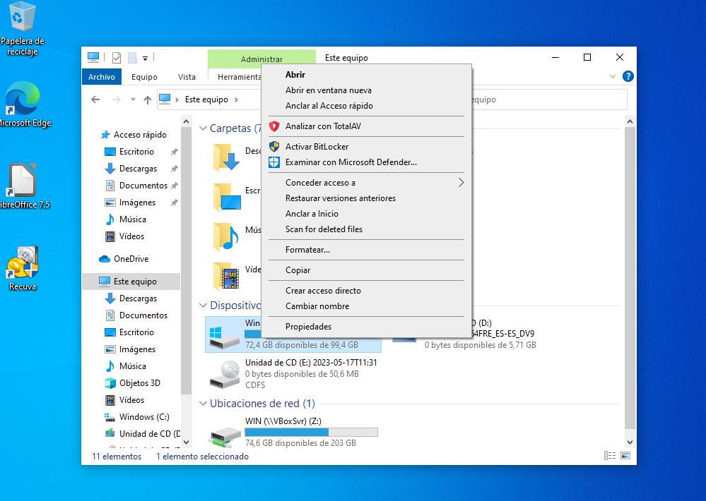
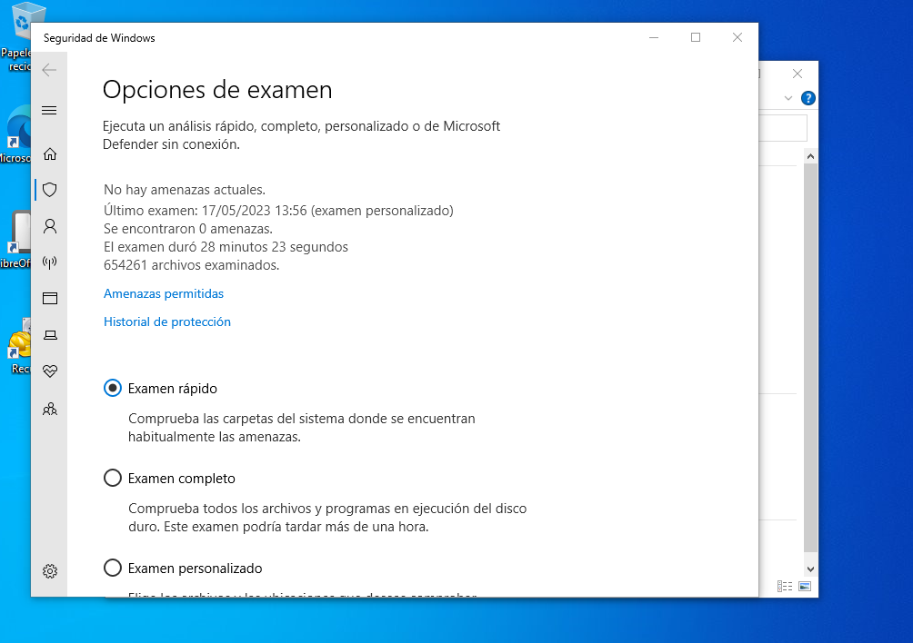
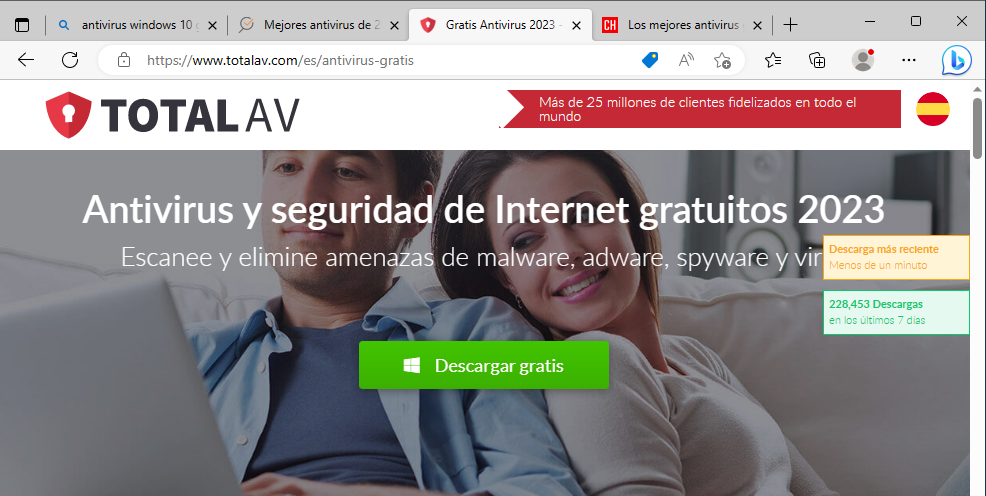
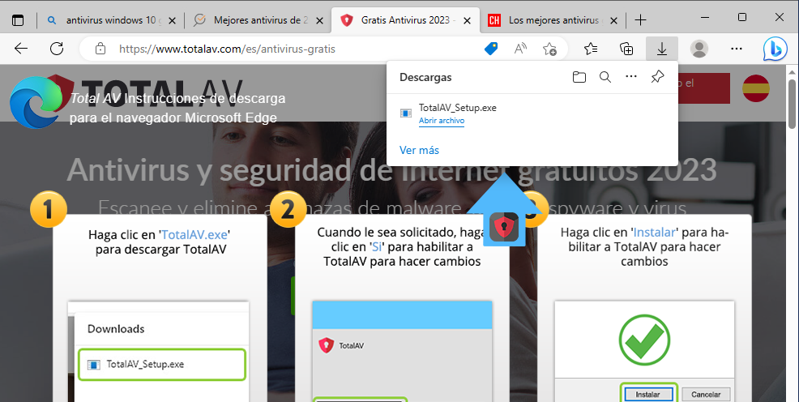
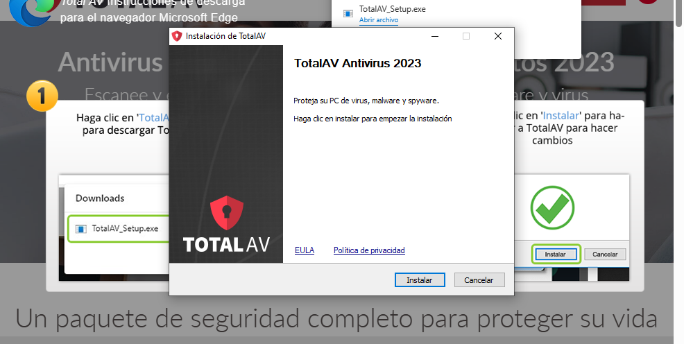
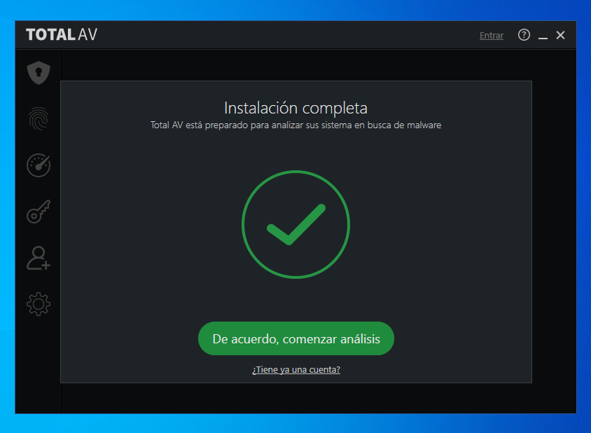
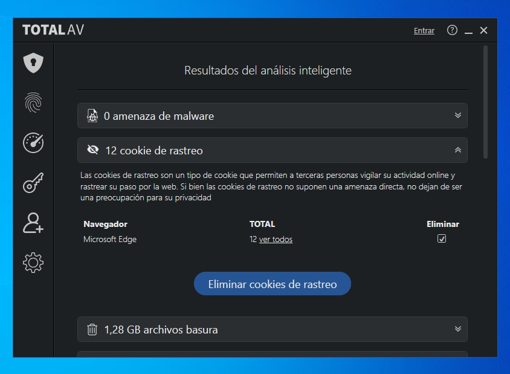
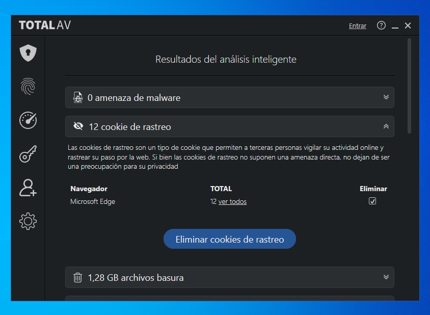
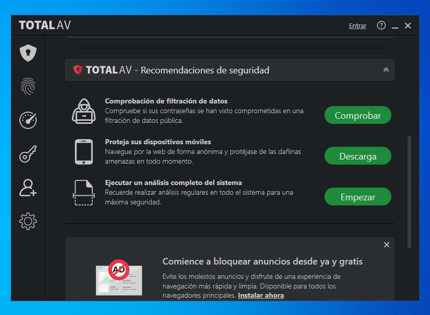
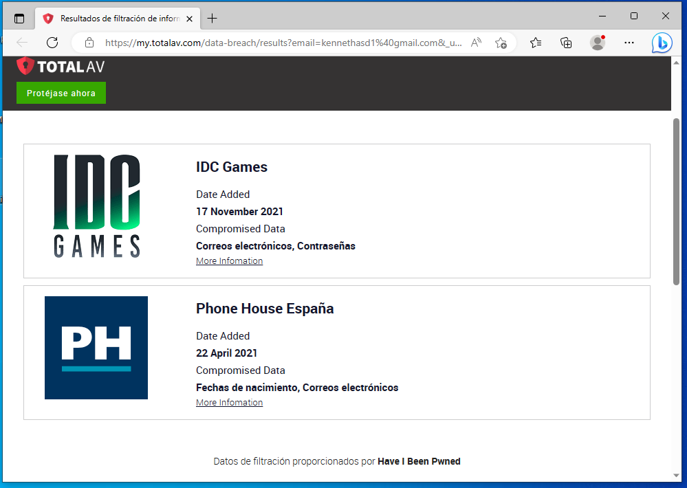

Hay multitud de opciones, tanto de pago como gratuitas. En esta ocasión hablaremos solo de dos:
TotalAV y Windows Defender, que es el antiviurs integrado en las nuevas versiones de Windows. Muy básico, pero cumple bien su función. Y ambos son gratuitos, aunque TotalAV tiene opción de pago.
Si bien Windows Defender solo permite analizar los archivos del disco, es fácil y efectivo con su trabajo, sin bloquear las medidas tras muros de pago.
TotalAV por contra tiene muchas opciones, aunque algunas de ellas solo están disponibles tras el pago. Es también sencillo de usar, pero tienes que acostumbrarte a ese tipo de interfaces primero. Por desgracia, no está exento de la publicidad integrada en el propio programa.
Pero antes una comparativa:
| ANTIVIRUS | WINDOWS DEFENDER | TOTALAV |
|---|---|---|
| Pros |
|
|
| Contras |
|
|
Windows Defender ya viene de serie. Para usarlo es tan sencillo como hacer click derecho en el archivo o carpeta a examinar y elegir: Examinar con Windows Defender. En mi caso elegiré la unidad C:.
Ahora elegimos el tipo de examen y le damos a examinar, y comenzará el análisis.
Cuando acabe nos dirá los resultados y en caso de virus nos dirá cuál es y qué opciones: eliminar, poner en cuarentena o no hacer nada.
Primero, iremos a la página web de TotalAV y clickearemos en DESCARGAR GRATIS
Tras descargar ejecutamos el archivo desde el navegador o desde la carpeta de descargas. Nos pedirá los permisos y le damos a aceptar.
El instalador es sencillo. Ya en la primera pestaña solo hay que darle a instalar sin pasos adicionales, así le clickamos en Instalar y listo.
La instalación nos dejará con un acceso directo en el escritorio. Ya está instalado.
Pero, ¿Cómo se usa?
Pues bien, abrimos el acceso directo y nos pedirá crear una cuenta. La creamos y ya desde el principio nos da la opción de arrancar un análisis.
Tras realizar un análisis nos aparecerá una ventana emergente con las medidas realizadas y un anuncio para que compremos la versión premium. La cerramos y ya nos aparece una sección para gestionar las medidas tomadas.
 

También hay otras opciones tanto abajo en esa misma sección como en la barra lateral, tales como realizar un análisis, comprobar la filtración de nuestros o descargar la versión para móviles.
Vamos a elegir por ejemplo la opción para comprobar la filtración de datos: Clickamos en la opción
Lo que vemos aquí es una ventana del navegador donde nos aparecen todas las páginas donde nuestro correo (que indicamos al crear la cuenta) aparece registrado y en las que se han producido filtraciones de datos, así como qué datos se han visto comprometidos y la fecha en la que ocurrió. La pega es que no nos asegura que se hayan filtrado o no nuestros datos, solo que se ha producido una filtración allí.